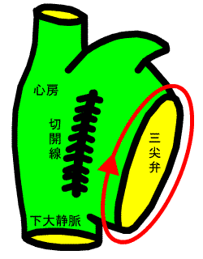
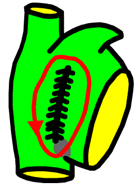

洞調律 WPW症候群 副伝導路の位置の違いによるΔ波の変化 心室性期外収縮
WPW症候群の頻拍発作(AVRT) 房室結節リエントリー性頻拍(AVNRT) 心房内リエントリー性頻拍(IART)・心房粗動(AFL) ダウンロード
心房内リエントリー性頻拍
三尖弁を反時計方向に旋回するのが心房粗動 common type．
三尖弁を時計方向に旋回するのが心房粗動 uncommon type．
三尖弁を旋回しないタイプは，障害心筋によるslow conduction zoneが不整脈の基質になっていることが多い．

